The Form Designer is available for all Advanced Workflows (WAB), including IncidentApp, and all Advanced Workflows (WAB)-based custom apps. The Form Designer allows you to edit the design of the forms used on each of the workflow steps, including:
The same underlying Form Template may be used at different steps in the workflow, with a different form design. In this way you can include or exclude fields, add initiators, edit action buttons, and modify conditions for each step, even if they share the same template.
To access the Form Designer you must have Manage Workflow rights for all workflow types and be a member of the App Role FormsDesigner. Membership in this role is set in Apps Manager (Setup > Apps). Select the Role Memberships tab for the App.
To use Form Designer:
Select Designer from the main menu button.
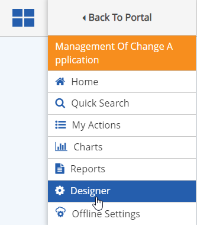
Select the Form Type.
The form types shown in the drop-down list correspond to the underlying Workflow Types.
Status Settings: Optional. Configure custom color-coding for workflow tabs and status indicators. Status setting can be set individually for each workflow type. See Status Indicator Settings. Click Save to save settings. It is not necessary to load a form to apply the status settings.
Select the Workflow Step to open a form for editing.
The Form for the step will be loaded in edit mode.
The Header fields names in the right pane are the read-only informational fields that are displayed in the form header in the App.
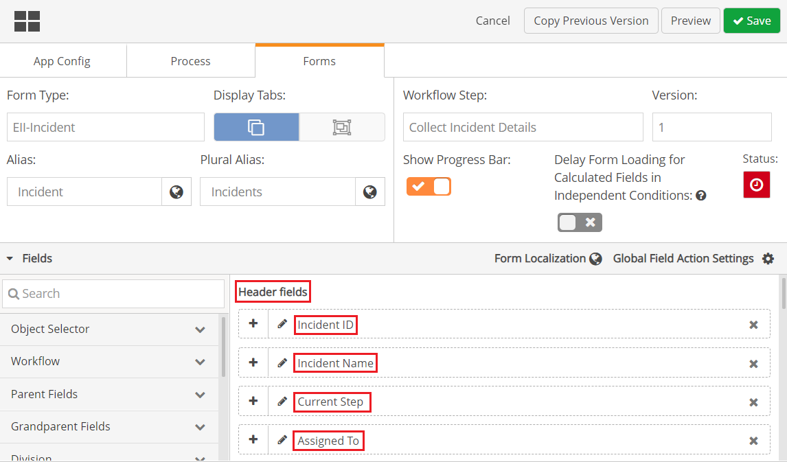
Below see the header fields as they appear to the end user. Click the Info button to hide/show header fields.
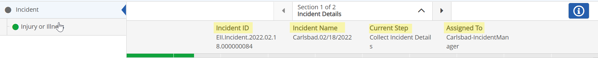
You can customize the header with fields of your choosing and specify default values for them, using macros to take values from other fields.
To define header fields:
Drag a field you want to use onto the Header fields pane and drop it onto one of the four header field boxes.
In the Default Value field, type "{" to see the list of fields available to be used as macros. Select a macro for a field you want to use.
You can concatenate macros to define the default value.
For example, the default value for the Incident Name field can be concatenation of the Facility selected from the object selector, the Incident Type and the Incident Date:
{Field::Object Selector}.{Field::EII-IncidentType}.{Field::EII-IncidentDate}
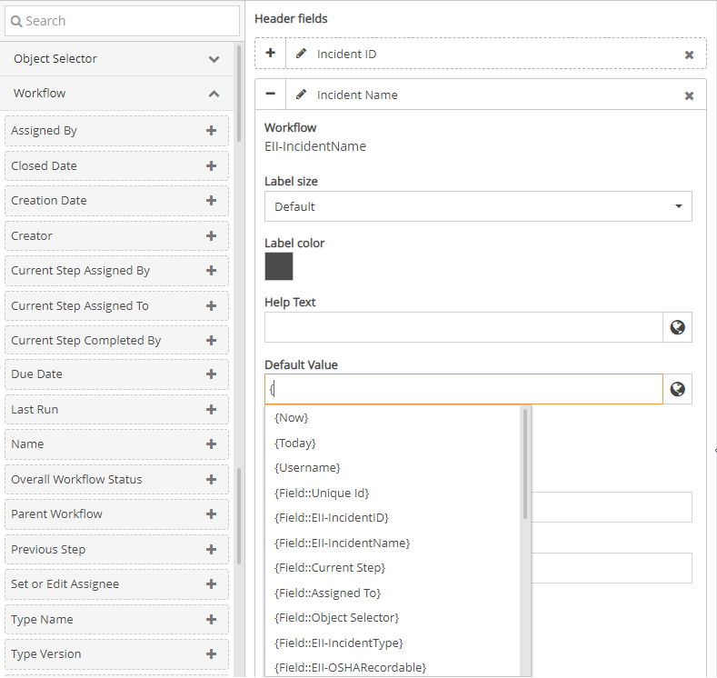
When the form is first opened in Designer it will include all the fields on the Form Template associated with the step. You can remove fields you want to hide, and add other types of fields and form components. By default, the first section is called "Form Fields".
The Fields that can be added to the form are shown in the left pane. Click the arrow on each category to view the fields.
Object Fields (Division, Facility, Unit, POI, Requirement): Standard and custom fields for the objects associated with a workflow may be included on the form. The fields for each object type include all standard fields and any custom fields applied to that object type in the system. Fields are in read-only mode on the form. After being added to the form, the fields may then be used in Conditions.
Search for components by name using the Search text box at top. The components are automatically filtered as you type.
To add an item to the form. drag and drop it onto the form where you want it, or click the plus sign to add it to the bottom of the form. See
Multiple sections can be created in a single form in Form Designer. Click Add Section to add a new section to the form. You can edit the section name by clicking the pencil icon. The section name can be up to 50 characters. You can change the order of the sections by moving them up and down in the Field Section.
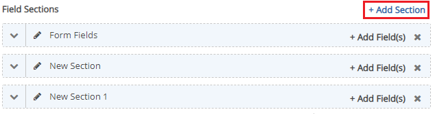
Below see the Section Selector with section names as they appear to the end user.
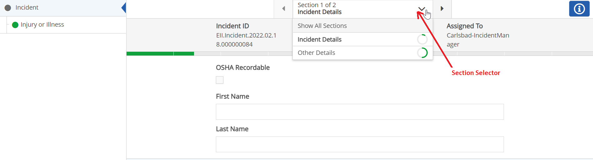
To see a section in the Section Selector, the section must contain fields.
This feature allows users to access a list of sections and quickly navigate to the desired section. Click on the drop-down arrow to see all sections or select the desired section. You can also use side arrows to select the desired section.
You can add fields to a section by clicking Add Fields in the desired section.
To move fields from one section to another:
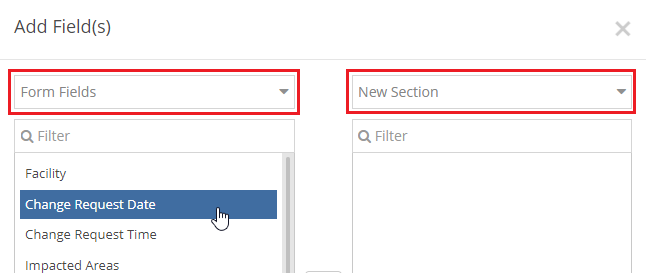
Click Apply to apply changes without making them permanent. You can revert to the previously unsaved settings by clicking Reset.
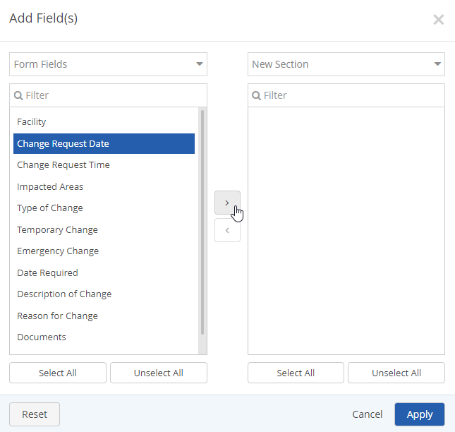
Select the plus (+) on the field button to view properties for the field.
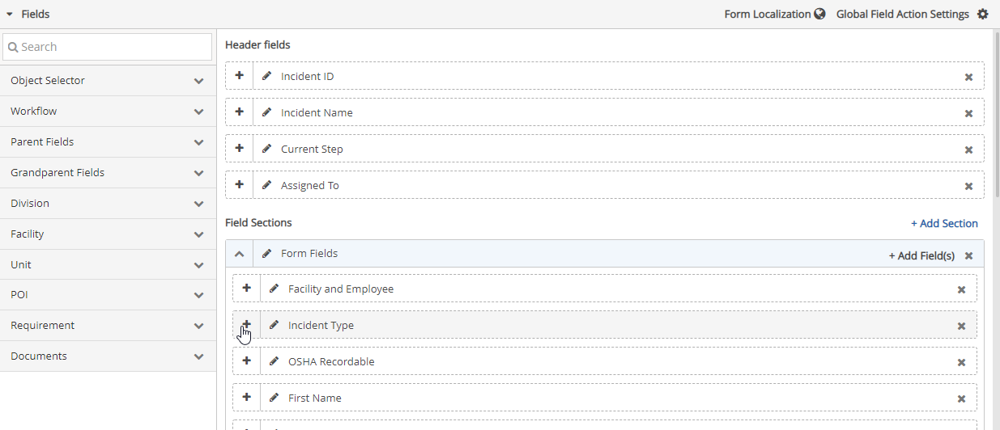
Field properties include:
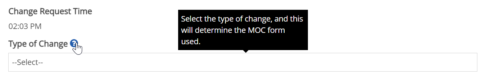
Closing a workflow is a status change and not a Workflow step transition. If "required when transitioning" is selected a user can still close a workflow without completing that field, unless "required to close" is selected.
Field values not retrieved from the server (offline, connective, etc), will not be reprocessed.
The checkbox in front of the Reprocess on Source Field Value Change will be greyed out until Read Only is selected. .
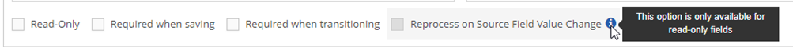
Once Read Only is selected the checkbox in front of Reprocess on Source Field Value Change can be checked.
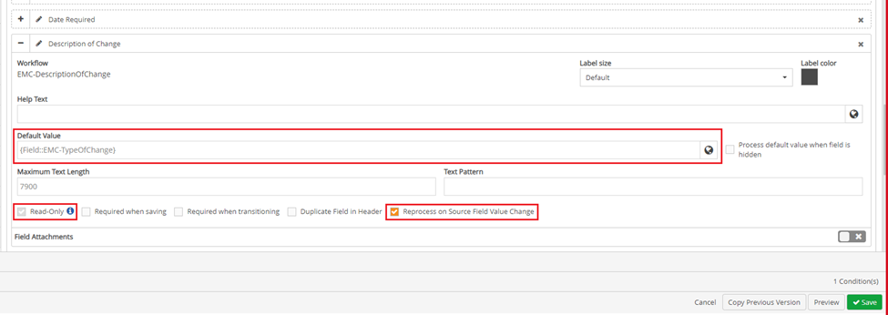
If the Default field value is empty, there will be an error message "The Default Value is empty. There is nothing to process for this field." Ensure a value is inputted in the Default value field.
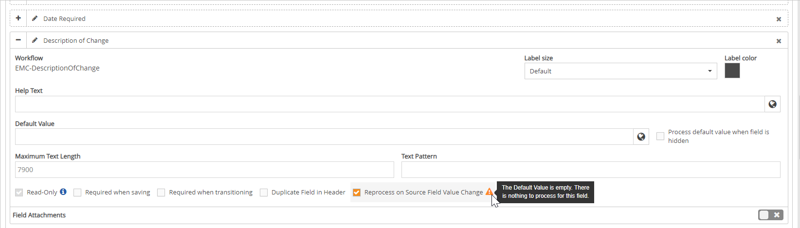
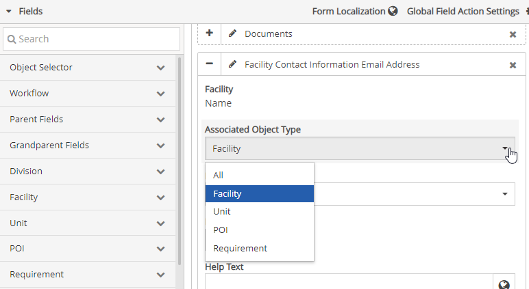
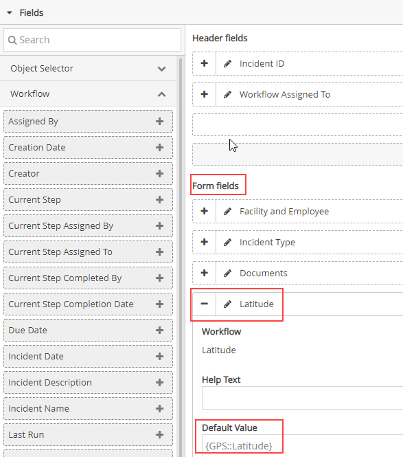
Actions that can be added to the form are shown in the Actions section. Click the arrow to expand the Action section to display possible actions.
If you do not want a particular action to be an option on the form, you can remove it by clicking the (x) on the button.
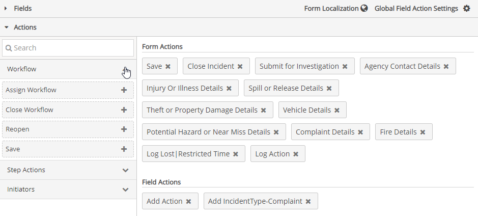
You can edit the text on the button and choose the method to be used to assign the action from the Action properties. Select the Action to view and edit the properties from a sliding window.
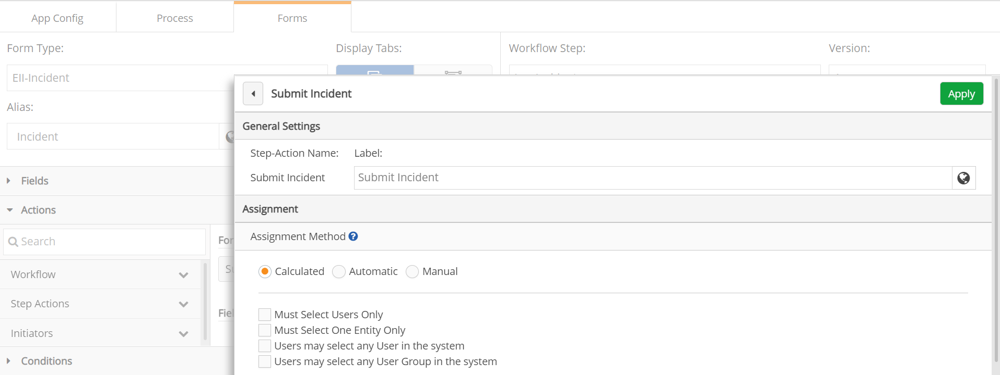
This method determines whether the user executing the action will be prompted to assign the destination step or if it will be automatically assigned.
Calculated: Prompts the user only if the user is not a role member of the destination step's role.
Automatic: Automatically assigns the user to the next action step. Select the destination user from one of the options:
Manual: Manually assigns the user to the next action step according to the user's role:
For the Calculated and Manual assignment methods, additional settings are available:
You can also create Conditions to control visibility of Action buttons. See Defining Actions.
Conditions allow you to define conditional behavior for the form, based on selected field values. See Defining Conditions for Forms.
Editing the step names in the Workflow Type or changing the workflow name may cause you to lose previously designed forms in Form Designer.